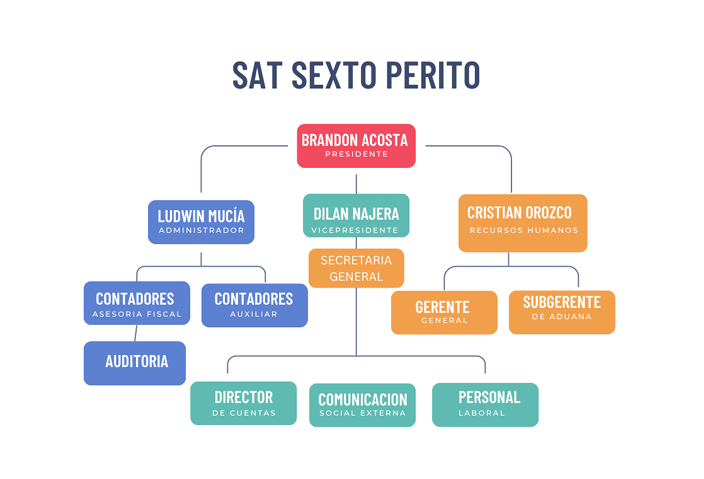

Bienvenido a la SAT de 6to Perito Contador
Superintendencia de Administración Tributaria
.png)
Logotipo oficial de la Superintendencia de Administración Tributaria.
Edificio de oficinas centrales de la SAT.
Recaudar y fiscalizar los tributos con transparencia y eficiencia para el beneficio de los guatemaltecos.
Ser una institución moderna, confiable y líder en la administración tributaria, con servicios de calidad y equidad.
Integridad, transparencia, ética, profesionalismo y servicio al contribuyente.
Artículo 1. Objeto del Reglamento: Establecer normas de conducta, organización y operación del personal de la agencia, garantizando un servicio ético y profesional en trámites ante la SAT SEXTO PERITO.
Artículo 2. Ámbito de Aplicación: Es obligatorio para todos los colaboradores, prestadores de servicios y personal administrativo.
Artículo 3. Estructura Organizacional: La agencia cuenta con una estructura jerárquica que incluye al Presidente, Vicepresidente, Administrador, Gerente General, entre otros.
Artículo 4. Funciones Generales: Cada área tiene funciones específicas orientadas a la atención y gestión de trámites fiscales.
Artículo 5. Principios éticos: Los colaboradores deben actuar con honestidad, confidencialidad, profesionalismo y respeto.
Artículo 6. Confidencialidad: Está prohibida la divulgación de información sin el debido consentimiento.
Artículo 7. Uso de recursos: Los recursos de la empresa deben ser utilizados únicamente para fines laborales.
Artículo 8. Jornada Laboral: La jornada es de lunes a viernes, de 8:00 a 17:00 horas.
Artículo 9. Puntualidad y Asistencia: Tres retardos equivalen a una falta injustificada.
Artículo 10. Faltas leves: Se considera falta leve el retardo, el uso inadecuado del uniforme o no presentar el carnet de la empresa.
Artículo 11. Faltas Graves: Se consideran faltas graves la divulgación de información, falsificación de documentos o maltrato a clientes.
Artículo 12. Sanciones: Las medidas disciplinarias pueden ser amonestación, suspensión o terminación laboral.
Artículo 13. Modificaciones: Solo pueden ser realizadas por la Gerencia General con notificación escrita.
Artículo 14. Aceptación: Todo colaborador debe firmar una carta de aceptación del reglamento al ingresar a la empresa.
A continuación se muestra la estructura organizacional y la escala remunerativa de la agencia.
+502 2423-1234
+502 2423-5678
contacto@sat-perito.com
soporte@sat-perito.com